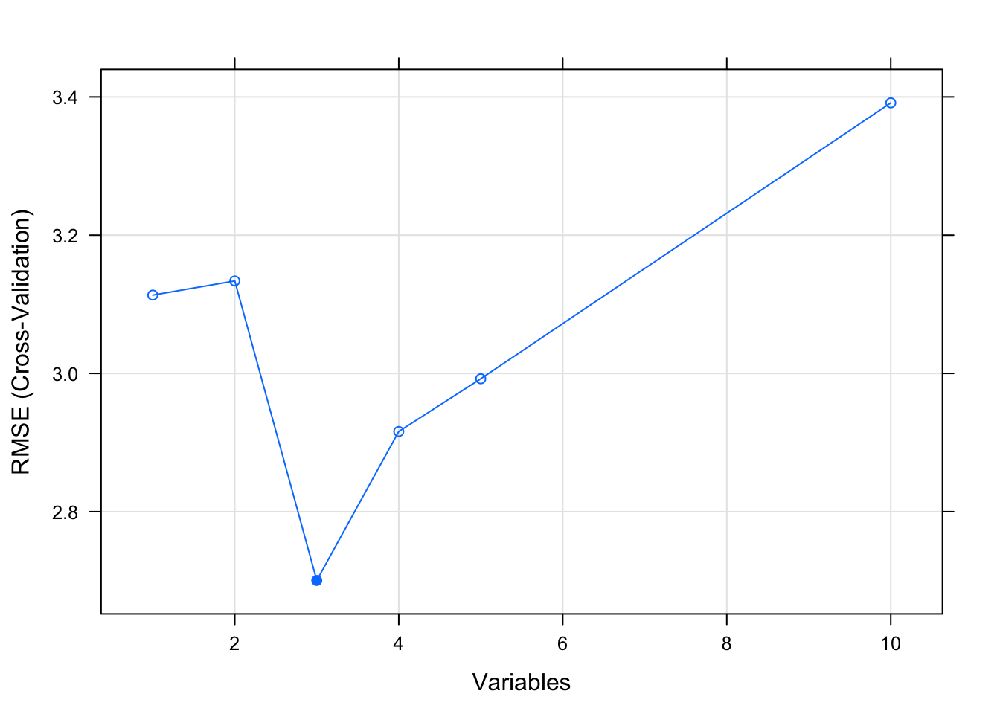

Chapter 10 Classification Problems
Next up we consider the issue of building a model to predict a binary (e.g. “yes” / “no” or “positive /”negative“) outcome although we might also predict more than one class. For the sake of explanation we’ll keep our attention to the”two class" situation. As an example, the mtcars data frame has a variable called am which indicates whether a car has an automatic or manual transmission. This is indicated, respectively, by a 0 and 1.
head(mtcars)## mpg cyl disp hp drat wt qsec vs am gear carb
## Mazda RX4 21.0 6 160 110 3.90 2.620 16.46 0 1 4 4
## Mazda RX4 Wag 21.0 6 160 110 3.90 2.875 17.02 0 1 4 4
## Datsun 710 22.8 4 108 93 3.85 2.320 18.61 1 1 4 1
## Hornet 4 Drive 21.4 6 258 110 3.08 3.215 19.44 1 0 3 1
## Hornet Sportabout 18.7 8 360 175 3.15 3.440 17.02 0 0 3 2
## Valiant 18.1 6 225 105 2.76 3.460 20.22 1 0 3 1We could build a classification model to predict whether a car had an automatic or manual transmission based on one or more variables from the data frame. A more general example might be predicting whether a patient has tested positive or negative for a condition. Unlike prediciting a continuous outcome, we would be classifying an outcome as one thing or another. Evaluating such a model involves more than just computing RMSE. Let’s explore some considerations that need to be made.
10.1 Hypothesis Testing
Now, before we dig into the details our classifier, remember that most things in statistics and classification revolves around the idea of a hypothesis. In this case, the “null” hypothesis is that a patient does NOT have the disease whereas the alternative hypothesis is that they do. Well, for a statistician that’s a bit strong. Let’s just say that if there is enough evidence to reject the null hypothesis then we will.
10.1.1 Type I and II Errors
Anyway, the larger idea is that we might apply our test to someone and subsequently determine that they have a disease when in fact they don’t. This would be an example of a “false positive” also known as a “Type I Error”. It is also possible that we apply the test to someone and we say that the do not have the disease when they actually do. This is known as a “false negative” also known as a Type II Error" wherein we fail to reject the null hypothesis for this person. A perfect test would have zero false positives and zero false negatives
10.2 Performance Measures
With Linear Regression we were predicting a continuous outcome with the goal of being able to minimize the RMSE (root mean square error). In classification problems we need a metric or “performance measure” that we can use to judge the effectivness of any model we create.
Let’s say that we are predicting whether someone has a disease or not. Pretend we have a classifier that we use against a blood sample to make this determination. The outcome is either a 1 which means that the patient is positive for the condition whereas an outcome of 0 represents a negative.
10.3 Table of Outcomes
We’ll generate two vectors here with one being named “actual” that represents the “truth” or “reality” of the situation. This is our reference against which we will compared our predictions. The second vector, imaginatively named “predicted”, contains the predictions.
# Pretend that this vector represents the actual condition status for the patients
set.seed(123)
actual <- factor(sample(c(0,1),20,T),levels=c(1,0))
# Pretend that we generated the following predictions using a really cool, highly-sophisticated model
set.seed(321)
predicted <- factor(sample(c(0,1),20,T),levels=c(1,0))We can now compare the predicted against the actual to see how “good” our model is. This table provdes the basis from which we can compute a number of performance measures
(myt <- table(predicted,actual))## actual
## predicted 1 0
## 1 4 4
## 0 7 5sum(myt)## [1] 20So first of all we notice that there are N = 20 people in this study. It might be helpful to view this table using some terminology:
True Positives - With respect to the first row - we predicted that 4 people have the disease that actually do have it. You could then say that the number of TRUE POSITIVES (abbreviated as “TP”) is 4.
False Positives - We also predicted that 4 people have the condition when they in fact do not. We could then say that the number of FALSE POSITIVES, abbreviated as “FP”, is 7. This is also known as a “Type 1” error.
False Negatives - In the second row we predicted that 7 people do NOT have the disease/condition when they actually do. So you could say that the number of FALSE NEGATIVES (abbreviated as FN) is 7.
True Negatives - We also predicted that 5 people do not have the condition and they do not. So then the number of TRUE NEGATIVES (abbreviated as TN) is also 5.
10.3.1 Computing Performance Metrics
Now comes the fun part in that you might be concerned with specific metrics to assess the quality of your model in specific terms. Since our model, such as it is, seems to relate to the quality of a medical diagnostic we might be concerned with its accuracy, precision, and sensitivty. The first two terms in particular are frequently used synonymously when they are not the same thing. Remember that we have N = 20 patients. Below is a graphic from Wikipedia which presents many (if not all) of the metrics that can be computed against a confusion matrix.
We’ll focus on some specific metrics as they will assist our understanding of how to assess a model.
myt## actual
## predicted 1 0
## 1 4 4
## 0 7 5sum(myt)## [1] 2010.3.1.1 Accuracy
So let’s take the number of observed True Positives and True Negatives, add them together, and divide them by the total number of patients in the study group to arrive at what is known as the Accuracy of our model. Another way to think of the denominator is as the sum of all observed results, True and False.
Accuracy = (TP + TN) / (TP + TN + FP + FN) = 9/20 = 0.45
(accuracy <- (myt[1,1] + myt[2,2]) / sum(myt))## [1] 0.4510.3.1.2 Precision
How precise is the model ? This is computed in a different fashion. We take the number of True Postives (TP) and divide that by the sum of True Positives (TP) and False Positives (FP). The denominator is the sum of row 1 in our table myt.
Precision = TP / (TP + FP) = 4 / (4 + 4) = 0.5
(precision <- myt[1,1]/(myt[1,1]+myt[1,2]))## [1] 0.5It is helpful to know that Precision is also known as the PPV “Positive Predictive Value” since it is concerened with the ratio of True Positives over the sum of all Positive related quantities including the False Positives. The larger the number of FP then the smaller the ratio which results in a lower precision.
10.3.1.3 Sensitivity
Sensitivity is related to Precision except the ratio we look at is the number of True Positives (TP) divided by the sum of True Positives and False Negatives (which are actually Positives). This tells us how frequently we find a positive case given that it is actually positive.
Sensitivity = TP / (TP + FN) = 5 / (5 + 4) = 0.5555
(sensitivity <- myt[1,1]/(myt[1,1]+myt[2,1]))## [1] 0.3636364Sensitivity also has synonyms: recall, hit rate, or True Positive Rate (TPR). For example, the concept of True Positive Rate might be more intutitive for you to understand although scientific medical literature might reference Sensitivity.
10.3.1.4 Specificity
Specificity tells us how frequently we find a negative case given that it is actually negative. This is also known as the “True Negative Rate”
Specificity = TN / (TN + FP) = 5 / (5 + 4) = 0.5555
(specificity <- myt[2,2]/(myt[2,2]+myt[1,2]))## [1] 0.555555610.3.1.5 False Positive Rate
We compute the FPR as follows:
False Positive Rate = FP / FP + TN = 4 / 4 + 5
(fpr <- myt[1,2] / (myt[1,2] + myt[2,2]))## [1] 0.444444410.4 Picking the Right Metric
There are more ratios we could compute some of which might be more relavant to our classification issue. In reality, picking the “right” metric is a function of your domain of study. Frequently, the sensitivity and specicity are used in medical testing scenarions as is the false positive rate. But you should search the literature in your area of interest to determine what is commonly used. We could say much more about these metrics but we’ll keep it simple for now.
Where are we ? We compared some predictions against reality and computed some ratios. The problem with this is that we don’t yet know from where the predictions came ? Well, we imagined that the predicted values came from some classification model we created though we didn’t specify one. Let’s take a real example here to illustrate some important points.
Let’s use the PimaIndiansDiabetes data frame from the mlbench package to predict whether a person has diabetes or not. This is just a basic example here, we aren’t trying to create a sophisticated model.
data("PimaIndiansDiabetes")
pm <- PimaIndiansDiabetes
# Create a logistic regression model
glm_model <- glm(diabetes ~ .,data=pm,family="binomial")Now that we have a model, let’s do some predictions. What we get back are probabilities (values between 0 and 1). We now have to figure out an appropriate threshold value that, if exceeded, will result in a classification of “positive” for diabetes.
glm_probs <- predict(glm_model,pm,type="response")
round(glm_probs,4)[1:20]## 1 2 3 4 5 6 7 8 9 10
## 0.7217 0.0486 0.7967 0.0416 0.9022 0.1466 0.0666 0.6446 0.7094 0.0363
## 11 12 13 14 15 16 17 18 19 20
## 0.2196 0.8978 0.7844 0.6286 0.6276 0.4009 0.3712 0.1966 0.3575 0.2342Let’s create a boxplot of these probabilities.
par(mfrow=c(1,2))
boxplot(glm_probs)
grid()
hist(glm_probs)
par(mfrow=c(1,1))10.4.1 Working With Prediction Probabilities
So now we need to write some code to decide how to best use these probabilities to make the predictions. We’ll start with 0.5. (That’s what most people do anyway). If the predicted probability corresponding to that observation is >= 0.5 then we’ll say that the person has diabetes. If not, then they will be classified as negative.
t <- 0.5
diabetes <- ifelse(glm_probs >= t,0,1)Next, let’s make a table which compares these predictions against the actual values. It turns out that our classifier doesn’t seem to be doing a good job here. There are lots of False Negatives and Positives here.
(myt <- table(predicted=diabetes,true=pm$diabetes))## true
## predicted neg pos
## 0 55 156
## 1 445 112So we could then compute the metrics corresponding to this particular confusion matrix. We could compute, for example, the True Positive Rate and False Positive Rate from this data.
get_tprfpr <- function(pred,true) {
myt <- table(pred,true)
tpr <- myt[1,1]/(myt[1,1]+myt[2,1])
fpr <- myt[1,2] / (myt[1,2] + myt[2,2])
return(c(tpr=tpr,fpr=fpr))
}
get_tprfpr(diabetes,pm$diabetes)## tpr fpr
## 0.1100000 0.582089610.4.2 Creating a ROC Curve
Let’s look at the metrics associated with other threshold values. Even better let’s just adjust our above function to do this for all values between 0 and 1.
get_tprfpr <- function(thresh,probs=glm_probs) {
diabetes <- ifelse(probs >= thresh,1,0)
myt <- table(diabetes,pm$diabetes)
tpr <- myt[1,1]/(myt[1,1]+myt[2,1])
fpr <- myt[1,2] / (myt[1,2] + myt[2,2])
return(c(tpr=tpr,fpr=fpr))
}So - This process has resulted in the creation of a ROC Curve that shows us TPR vs FPR across a large number of possible threshold values. For each selected threshold, we compute a confusion matrix from which we compute the associated tpr and fpr. When we are done, we plot tpr vs fpr. The idea with a ROC curve is to pick the threshold such that the area under the curve is maximized. While we have produced this ROC curve by hand, R provides packages to do this for us.
metrics <- t(sapply(seq(0.05,.95,.05),function(x) get_tprfpr(x)))
plot(tpr~fpr,metrics,
main="Steve's ROC Curve",
xlab="False Positve Rate (1-Specificity)",
ylab="True Positive Rate",type="l")
grid()
# Put the associated threshold values on the plot to help you identify
# the right value to maximize the AUC (Area Under Curve)
text(metrics[,2],metrics[,1],labels=seq(0.05,.95,.05),cex=0.9)